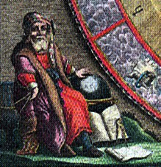
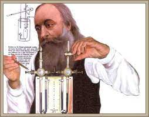

Conceptos
A medida que el hombre primitivo desarrolló su inteligencia, sintió la necesidad de explicarse el porqué de las cosas que sucedían a su alrededor y encontrar respuestas a las siguientes interrogantes: ¿Por qué el día y la noche?¿Por qué el frío y el calor? ¿Por qué llueve? ¿Qué son los truenos? ¿Qué es el viento? ¿Por qué vuelan los pájaros? ¿Qué es la Luna? ¿Qué es el Sol? ¿Por qué tiembla? ¿Qué son los eclipses? ¿Qué son las estrellas? Estas y otras cuestiones eran un verdadero misterio antes de que la Física contribuyera, gracias a su estudio, a dar respuesta a las mismas. Sin embargo, no todo está resuelto, pues aún en nuestros días no se tiene absoluta certeza sobre: ¿Qué es la materia? ¿Qué es la luz? ¿Existe vida en otros planetas? ¿Qué somos? ¿De dónde provenimos? ¿A dónde vamos? Pero confiamos que con los avances de la Física y de la
ciencia en general algún día el hombre podrá responder satisfactoriamente estas preguntas.
Para comprender el desarrollo de la Física es necesario mencionar brevemente algo de su historia:
La Física tiene sus orígenes con los antiguos griegos,quienes trataron de explicarse el origen del Universo y el movimiento de los planetas.
Quinientos años antes de la era cristiana, mientras Leucipo y Demócrito pensaban que todas las cosas que nos rodean, es decir, la materia, estaban constituidas por pequeñas partículas, otros explicaban que la materia estaba constituida por cuatro elementos básicos: tierra, aire, fuego y agua
Hacia el año 300 a. C., Aristarco ya consideraba el movimiento de la Tierra alrededor del Sol; sin embargo, durante cientos de años predominó la idea de que la Tierra,carente de movimiento, era el centro del Universo contodos los planetas y estrellas girando en torno a ella.
Hasta el año 1500 de nuestra era se desarrolló un gran interés por la ciencia. Galileo Galilei, científico italiano, llegó a comprobar que la Tierra giraba alrededor del Sol tal como sostenía Copérnico, astrónomo polaco. Además, Galileo construyó su propio telescopio y demostró que las estrellas estaban a distancias fabulosas
y debido a ello la mayoría resultaba invisible al ojo humano. También descubrió manchas en el Sol, las cuales, al desplazarse lentamente, demostraron el giro de éste sobre su propio eje. Sin embargo, en Roma, la Santa Inquisición obligó a Galileo a retractarse de estas afirmaciones, pues chocaban completamente con las ideas religiosas contenidas en las Sagradas Escrituras. Galileo
pasó sus últimos días en el retiro y murió en 1642, año del nacimiento de Isaac Newton.
Newton, científico inglés, describió el movimiento de los cuerpos celestes por medio de su Ley de la Gravitación Universal.Explicó que la fuerza de atracción llamada gravedad, existente entre dos cuerpos cualesquiera, ocasiona la caída de las cosas al suelo y su permanencia sobre él, de la misma forma como el Sol retiene a los planetas girando a su alrededor en lugar de permitirles flotaren el espacio.
En el siglo xviii se inicia el desarrollo de la termodinámica, rama de la Física que se encarga del estudio de la transformación del calor en trabajo, y viceversa.
Benjamín Thompson, conde de Rumford, propuso que el calentamiento causado por la fricción se debía a la conversión de la energía mecánica en térmica.
En 1820, el físico danés Hans Christian Oersted descubrió que cuando una corriente eléctrica circula por un conductor a su alrededor se genera una fuerza parecida a la de un imán, es decir, un campo magnético. Este hecho dio nacimiento al electromagnetismo, mismo que estudia
las relaciones mutuas entre la electricidad y el magnetismo. En 1831, el físico y químico inglés Michael Faraday descubrió las corrientes eléctricas inducidas, que son
aquellas que se producen cuando se mueve un conductor en sentido transversal (perpendicular) a las líneas de flujo de un campo magnético. Faraday enunció el siguiente
principio: La inducción electromagnética es el fenómeno que provoca la producción de una corriente eléctrica inducida, como resultado de la variación del flujo magnético debido al movimiento relativo entre un conductor y un campo magnético. En la actualidad, casi toda la energía que se consume en nuestros hogares, comercios, fábricas, escuelas y oficinas, se obtiene debido al fenómeno de la
inducción electromagnética. En todo el mundo existen generadores movidos por agua en estado líquido o en forma de vapor, en los cuales enormes bobinas giran entre
los polos de potentes imanes y generan grandes cantidades de energía eléctrica.
| A mediados del siglo xix, el inglés James Prescott Joule,industrial cervecero, después de continuar los estudios de Thompson, comprobó que siempre que se realiza cierta cantidad de trabajo se produce una cantidad equivalente de calor. Joule estableció el principio llamado equivalente mecánico del calor, en el cual se demuestra que por cada joule de trabajo se producen 0.24 calorías, y que cuando una caloría de energía térmica se convierte en trabajo se obtienen 4.2 joules. |

Este principio hizo posible establecer la Ley de la Conservación de la
Energía, misma que señala que la energía existente en el Universo es una cantidad constante que no se puede crear ni destruir, sólo se puede transformar.
A finales del siglo xix, el físico francés Enrique Becquerel descubrió, en 1896, la radiactividad, al observar que los átomos del elemento uranio desprendían partículas más pequeñas, por lo cual se pensó que el átomo no era la partícula más pequeña, sino que estaba constituido por otras partículas. Esto motivó la realización de más experimentos atómicos, como los de Thomson, Rutherford y Bohr, quienes concluyeron en describir al átomo como un pequeño Sistema Solar. Así
como los planetas giran alrededor del Sol, en el átomo los electrones de carga negativa giran alrededor del núcleo, el cual está compuesto de protones con carga positiva y de neutrones sin carga eléctrica (figura 1.3).
Los descubrimientos de la radiactividad abrieron un nuevo campo: la Física Atómica, encargada de estudiar la constitución del átomo. Aparecieron las teorías: Cuántica de Planck, de la Relatividad de Einstein y de la Mecánica Ondulatoria de De Broglie. Actualmente el descubrimiento de nuevas partículas de vida media muy corta ha originado la Física Nuclear, cuyo objetivo es descubrir totalmente la constitución del nucleo atomico.